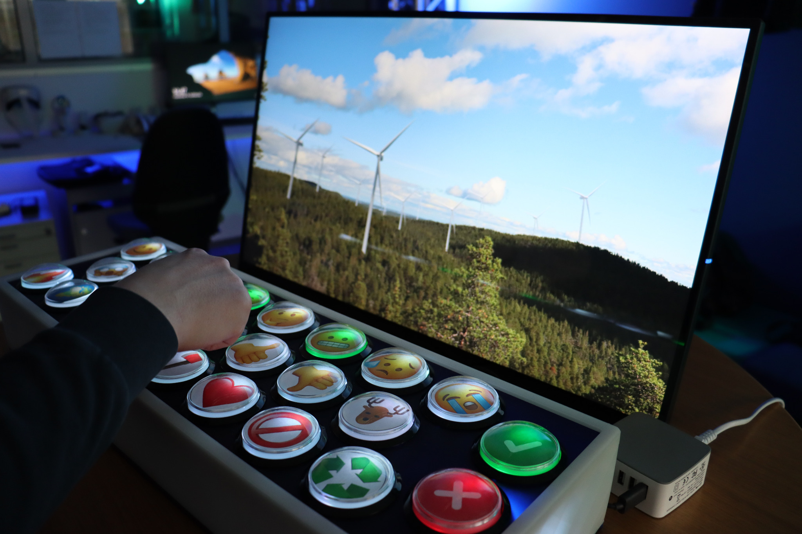
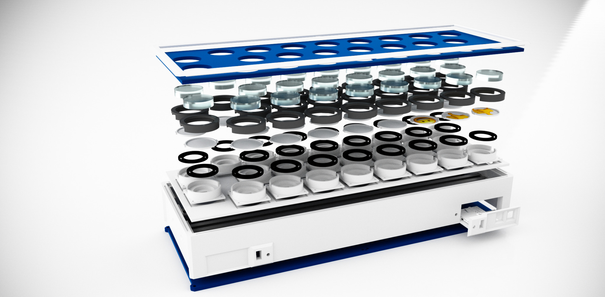
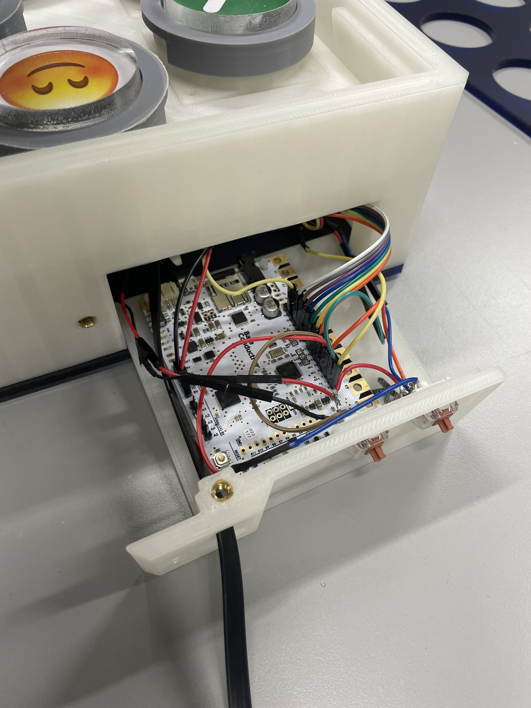

EmojiBoard is a tangible feedback collection device designed for exhibitions, workshops and public participation. Unlike traditional smiley surveys, it allows users to select multiple emojis using a Choose All That Apply (CATA) interaction model, making feedback richer and more expressive.
I designed and developed the complete system, including the industrial design, electronics, embedded software and data collection workflow. The project explores how physical interfaces can make surveys more engaging and intuitive.
Version 1
The original EmojiBoard was designed as a custom-built research device. The enclosure was manufactured using 3D printing and laser cutting, while interchangeable emoji caps allowed different studies to use different symbol sets.
The hardware uses Cherry MX switches, NeoPixel LEDs and a TouchBoard (Arduino Leonardo compatible), which appears to the computer as a standard USB keyboard.

Version 2
Based on user feedback collected during conferences and exhibitions, the second version focused on robustness and ease of deployment. Custom switches were replaced with commercial push buttons and the controller was upgraded to a Raspberry Pi.
The new version operates completely stand-alone without an external computer, making installation simpler while improving reliability and simplifying data collection.



Application
EmojiBoard was piloted in a citizen participation installation exploring opinions on wind turbine placement in natural landscapes. A real-time Unreal Engine visualization allowed visitors to navigate different scenarios while recording their emotional responses using the physical interface.